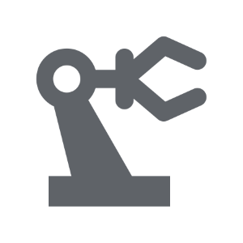
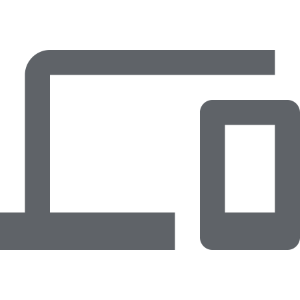
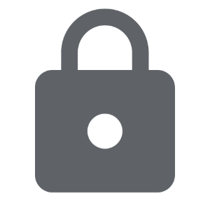
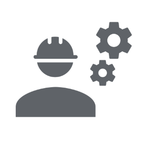
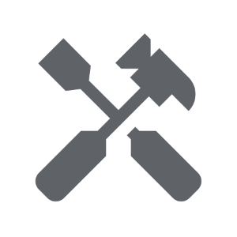

Kompetancer
Vores kernekompetencer spænder bredt inden for industriel automation, digitalisering og maskinsikkerhed, hvor vi tilbyder skræddersyede løsninger og rådgivning inden for PLC, HMI, motion, robotter, SCADA, dataopsamling, OEE-optimering og meget mere.

Automation
PLC • HMI • Motion Control • Robotter • Vision

Digitalisering
Dataopsamling • Dashboards • IIoT • AI

Standardisering
OMAC PackML • Modularisering

Maskinsikkerhed
CMSE® - Certified Machinery Safety Expert

Technical Lead
Indkøb • FAT/SAT • Indkøring

Service
Optimering • Fejlfinding • Retrofitting